Воин - один из игровых классов, доступен при выборе стартовым после обучения, либо после строительства Казарм в Крепости. Ориентирован на ближний бой и обладает внушительным запасом здоровья. Может использовать любое оружие ближнего боя (мечи, кинжалы, топоры), а во вторую руку берет щит. Основная характеристика - Выносливость.
Воин - могучий боец ближнего боя, вооруженный щитом и мечом.
Скрытый за грудой мышц и стали, он способен выдержать такие удары, которые для любого другого стали бы смертельными.
Быстрые атаки
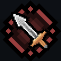
Рубящий удар
Рубящий удар
Описание:"Быстрая атака, рассекающая врагов и наносящая повышенный урон гуманоидам." Улучшение: +10% к урону (+5% наносим., +5% режущ.) за каждый уровень, +1% к пробитию защиты начиная с 12 ур.
Цель на N с. получ. эффект с шансом в X%: Тяжелая рука
—
20% 4 с.
Примечания:
Универсальный навык с средними характеристиками урона среди основных навыков. Можно назвать профильным, т.к. он имеет повышенный урон против гуманоидов
Наличие повышенного пробития защиты делает этот навык применимым везде и против всех противников
Параметр повышенного пробития защиты (25%) работает с отражением урона с помощью навыка "Стальная Крепость"
Уменьшение скорости атаки врага на 70% (дебафф "Тяжелая рука") работает и на боссов(кроме Ткачихи). Немного ломает тайминги парирования, но не редко может спасти жизнь
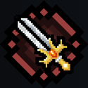
Освященное оружие
Освященное оружие
Описание:"Быстрая атака, наносящая повышенный урон нежити и демонам" Улучшение: +9% к урону (+5% к наносим., +4% к режущ.) за уровень, +0,4с. к времени действия дебаффа (Слабость) с 12 ур.
Отлично сочетается с эффектом "Кровопускание" на оружии
После убийства живого врага Воин получает бафф к урону (+12%) на 8с.
Время длительности баффа не увеличивается выше 8с. при последующих убийствах
Из-за всех достоинств этого навыка он является одним из лучших навыков для повышения его уровня выше 25 (Кольца)
Не идеален из-за огромного количества нежити в игре, что делает его не лучшим выбором на некоторых локациях
Силовые навыки
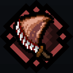
Жнец
Жнец
Описание:"Грозная атака с тяжелым замахом, разрубающая врагов в большом радиусе перед персонажем" Улучшение: +24% к урону (+8% к наносим., +8% к дробящ., +8% к режущ.) за уровень, +3% к области действия за уровень
Описание:"Воин бьет по своему щиту, оглушая и отбрасывая ближайших врагов в большой области вокруг себя." Улучшение: +20% к области действия за каждый уровень, +5 ед. отталкивания за каждый уровень (начиная с 15 ур.), +0,2с. действия баффа за каждый уровень (начиная с 12 ур.)
Рокот боя — значения по уровням
Эффект/Уровень
1
2
3
4
5
6
7
8
9
10
11
12
13
14
15
16
17
18
19
20
21
22
23
24
25
Наносимый урон
50%
60%
70%
Урон ув. на X% от показателя защиты экипир-го щита (дробящий)
15%
20%
25%
Область действия
350%
370%
390%
410%
430%
450%
470%
490%
510%
530%
550%
570%
590%
610%
630%
650%
670%
690%
710%
730%
750%
770%
790%
810%
830%
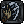
Отталкивание
—
100
105
110
115
120
125
130
135
140
145
150
Персонаж на N с. получает эффект за каждого убитого врага: Увеличенный урон
—
7 с.
7,2 с.
7,4 с.
7,6 с.
7,8 с.
8 с.
8,2 с.
8,4 с.
8,6 с.
8,8 с.
9 с.
9,2 с.
9,4 с.
9,6 с.
Цель на N с. получ. эффект с шансом в X%: Замедление
—
35% 5 с.
Примечания:
Настоящий АОЕ навык Воина (урон по большой области)
Навык по своей сути является вспомогательным
Имеет довольно быструю анимацию атаки
Урон навыка также увеличивается от экипированного щита, но все равно не впечатляет
Урон навыка не увеличивается от эффекта колец "Дыхание Хаоса" и от оружия с эффектом "Жатва". Это является ахиллесовой пятой "Рокота" особенно на более поздних стадиях игры
Отталкивание в 150 ед. (25 ур. навыка) помогает для контроля толпы. Хорошо сочетается с эффектом кольца, повышающим силу отталкивания
Навык имеет увеличение урона на 5% за каждого убитого им врага. Трудно реализуемый эффект, который заставляет использовать навык для добивания врага. Увеличение урона стакается
Рекомендуется использовать Клинок Палача или эффект "Жнец" на оружии дабы упростить набор стаков для увеличения урона
Важно помнить, что эффекты "увеличения урона" от других навыков заменяют друг друга, а не дополняют, поэтому лучше их не комбинировать
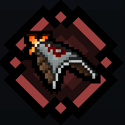
Бросок щита
Бросок щита
Описание:"Воин бросает свой щит в противника, с небольшим шансом оглушая его. По мере улучшений количество целей, которые поражает щит, растет. Если Воин использует щит для блока, то он возвращается в руку, прерывая бросок" Улучшение: +5% к наносим. урону за уровень (обычная версия) | +6% к наносим. урону за уровень, +5% к урону от взрыва за уровень (начиная с 20 ур.) (заряженная версия)
Бросок щита — значения по уровням
Эффект/Уровень
1
2
3
4
5
6
7
8
9
10
11
12
13
14
15
16
17
18
19
20
21
22
23
24
25
Наносимый урон
45%
50%
55%
60%
65%
70%
75%
80%
85%
90%
95%
100%
105%
110%
115%
120%
125%
130%
135%
140%
145%
150%
155%
160%
165%
Урон ув. на X% от показателя защиты экипир-го щита (дробящий)
30%
40%
50%
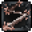
Снаряд отскочит X раз(-а) от цели
—
1 раз
2 раз
3 раз
4 раз
5 раз
Цель на N с. получ. эффект с шансом в X%: Оглушение
—
15% 3 с.
Бросок щита — заряженная версия
Эффект/Уровень
1
2
3
4
5
6
7
8
9
10
11
12
13
14
15
16
17
18
19
20
21
22
23
24
25
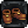
Скор. передвижения
-60%
Реген. ОМ
-110%
Наносимый урон
67%
73%
79%
85%
91%
97%
103%
109%
115%
121%
127%
133%
139%
145%
151%
157%
163%
169%
175%
181%
187%
193%
199%
205%
211%
Урон ув. на X% от показателя защиты экипир-го щита (дробящий)
40%
50%
60%
Снаряд отскочит X раз(-а) от цели
—
1 раз
2 раз
3 раз
4 раз
5 раз
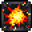
Создает область взрыва, наносящую ближ. врагам X% урона при убийстве врага с шансом в 15-17%
—
100%
105%
110%
115%
120%
125%
Цель на 3 с. получ. эффект с шансом в X%: Оглушение
—
15%
Примечания:
На бумаге - интересный навык, дарующий Воину атаку дальнего боя. На практике все гораздо печальнее
Наносимый навыком урон звучит заманчиво, но доп. урон скалируется от защиты (50-60%) экипированного щита, что будет очень мало, даже с лучшим щитом и на нем же эффектом "Укрепление"
Поражает до 5 целей (на 25 ур.) - на деле реально поразить 5 целей выйдет нечасто, щит отскочит 3-4 раза от пары противников (даже если их группа из 5 или более) и возвращается к Воину в руку
Взрыв врагов имеет малый шанс, да и итоговый урон не впечатляет
Может порадовать оглушением в 15% (на 25 ур.), с учетом что навык "любит" отскакивать от одних и тех же противников несколько раз - шанс на оглушение достаточный. Против боссов, соответственно, не работает
Уровень навыка стоит увеличивать выше 25 только ради увеличения шанса оглушения
Урон навыка скалируется от колец с эффектом "Дыхание Хаоса", но чудес ждать не стоит
При использовании блока щит сразу возвращается Воину в руку
Все эффекты навыков блокирования работают в полной мере, даже если визуально щит еще не вернулся
В клинце (в котором Воин находится практически всегда) навык больше мешает, чем помогает
Почти бесполезен против одиночных целей
Огромный расход ОМ (Очков Маны)
Особые навыки
Все навыки этой ветки имеют одинаковую анимацию и одинаковое окно парирования (идеального блока);
Парирование любого из навыков данной ветви полностью гасит любой получаемый урон (кроме сфер Чернокнижника) и не тратит ману на блокирование;
Парирование оглушает противника на 3 секунды (работает и на Чемпионов, но не на Боссов)
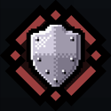
Стальная крепость
Стальная крепость
Описание:"Воин полностью концентрируется на обороне, отражая большую часть урона. Блок в момент удара отражает часть урона и даже вражеские снаряды." Улучшение: +5% к отражаемому урону за уровень
Блок в момент удара отражает X% урона ВСЕМ ближайшим врагам
—
250%
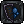
Затраты ОМ при блокировании урона снижены на X%
—
30%
40%
50%
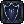
При блокир-и урона тратится не более X ед. ОМ
—
20 ед
Примечания:
Защитный и контратакующий навык, хоть и может не заблокировать весь урон, но делает получаемый смешным
При идеальном блоке наносит 250% (полученного типа) урона врагам обратно
Необязательно прокачивать навык выше 25 ур., это имеет смысл только ради повышения отражаемого урона
При блокировке навык тратит не более 20 ОМ. Хорошая "страховка" если вы не попали в нужный тайминг и просто блокируете урон
На радиус "взрыва" отражаемого урона не работают эффекты зачарования "Размах" и артефакт"Верёвка"
Пожалуй, самый лучший специальный навык, подходящий как опытным, так и начинающим игрокам. "Стальная крепость" в данный момент один из главных ДД аргументов Воина. Играется против всех противников и на всех локациях. Понятен, прост и эффективен. Ничего лишнего
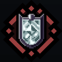
Обет Святости
Обет Святости
Описание:"Поднятый щит увеличивает скорость восстановления здоровья Воина. По мере улучшения навыка Воин сможет оглушать врагов, вовремя блокируя их атаки." Улучшение: +1% к эффективности блока (как к физ., так и к маг.) за уровень
Главная фишка навыка - нанесение святого урона (30% от урона персонажа) нежити вокруг персонажа в среднем радиусе. Это делает "Обет святости" более специализированным в некоторых ситуациях
Имеет смысл поднимать уровень навыка выше 25 ради более длительного оглушения и доп. урона
Самая низкая скорость движения при поднятом щите. Не является проблемой в большинстве ситуаций, ведь враги почти всегда сами бегут на персонажа
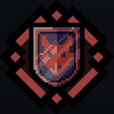
Поглотитель боли
Поглотитель боли
Описание:"Персонаж фокусируется на контратаке, а не на защите, сохраняя подвижность и готовность атаковать сразу после блока." Улучшение: +0,5% к эфф-ть блока за уровень (как физ., так и стих.), +0,5% к дебаффу (Уязвимость) за ур. (начиная с 15 ур.)
После заверш. блока персонаж на X с. получит бонус к урону за каждый заблок-й удар
После заверш. блока персонаж на 10 с. получит бонус к урону за каждый заблок-й удар
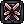
Персонаж получает бонус к урону даже если блок был пробит
—
Персонаж получает бонус к урону даже если блок был пробит
Блок в момент удара накладывает на цель Уязвимость к урону (X%) на 8 с.
—
5%
5,5%
6%
6,5%
7%
7,5%
8%
8,5%
9%
9,5%
10%
После заверш. блока произойдет взрыв, наносящий X% урона за каждый заблок. удар
—
1%
Примечания:
Самый неоднозначный специальный навык, защита которого, как и с "Обетом святости", ситуативна
После завершения блока Воин получит доп. урон за каждый удар в щит (25 ур.)
Навык подразумевает, что вы будете держать щит и принимать удары, чтобы потом сильно ударить в ответ, но в реальности вам будет хватать маны на 1-2 удара некоторых сильных монстров, а увеличение урона зависит от кол-ва полученных ударов
Увеличение урона также выдается, если блок был пробит
Бафф к парированию (+10% уязвимости к урону) слишком мал, особенно вспоминая про перк "Раскат грома"
Смысла повышать уровень выше 25 почти нету
К сожалению, "Поглотитель боли", как и "Бросок щита" нуждается в ребалансе либо в баффе
Классовые перки (Пассивные способности)
Персонаж имеет возможность получать и прокачивать Пассивные способности(перки) за получение Очков Доблести и повышения Уровня Доблести(Один зачищенный этаж -> Одно очко; Кол-во нужных Очков для повышения Уровня Доблести это и есть следующий Уровень Доблести, либо "текущий Уровень Доблести+1"). Помимо обычных перков, каждый класс имеет один или несколько специализированных (классовых) перков.
На данный момент Воин имеет 3 классовых перка.
Защитные Рефлексы
I
II
III
IV
V
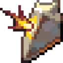
Защитные Рефлексы
1-й Уровень
2-й Уровень
3-й Уровень
4-й Уровень
5-й Уровень
С шансом в 15% пропущенный удар будет заблокирован щитом, как при использовании навыка
С шансом в 20% пропущенный удар будет заблокирован щитом, как при использовании навыка
С шансом в 24% пропущенный удар будет заблокирован щитом, как при использовании навыка
С шансом в 27% пропущенный удар будет заблокирован щитом, как при использовании навыка
С шансом в 30% пропущенный удар будет заблокирован щитом, как при использовании навыка
При срабатывании перка блок щитом расходует на 30% меньше ОМ
При срабатывании перка блок щитом расходует на 40% меньше ОМ
При срабатывании перка блок щитом расходует на 50% меньше ОМ
Персонаж со 100% вероятностью попытается заблокировать смертельный удар (не чаще, чем один раз в 20 с.)
Боевой Строй
I
II
III
IV
V
Боевой Строй
1-й Уровень
2-й Уровень
3-й Уровень
4-й Уровень
5-й Уровень
При поднятии щита ближайшие союзники (но не сам персонаж) получают +80 физ. защиты
При поднятии щита ближайшие союзники (но не сам персонаж) получают +120 физ. защиты
При поднятии щита ближайшие союзники (но не сам персонаж) получают +150 физ. защиты
При поднятии щита ближайшие союзники (но не сам персонаж) получают +180 физ. защиты
При поднятии щита ближайшие союзники (но не сам персонаж) получают +220 физ. защиты
При поднятии щита ближ. союзники получают +150 маг. защиты
При поднятии щита ближ. союзники получают +180 маг. защиты
При поднятии щита ближ. союзники получают +220 маг. защиты
При поднятии щита сам персонаж и ближ. союзники получают крит. урон на 40% реже
Раскат Грома
I
II
III
IV
V
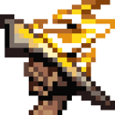
Раскат Грома
1-й Уровень
2-й Уровень
3-й Уровень
4-й Уровень
5-й Уровень
При поднятии щита все ближайшие враги получают 150% урона персонажа в виде дробящего (не чаще, чем один раз в 15 с.)
При поднятии щита все ближайшие враги получают 150% урона персонажа в виде дробящего (не чаще, чем один раз в 13 с.)
При поднятии щита все ближайшие враги получают 150% урона персонажа в виде дробящего (не чаще, чем один раз в 11 с.)
При поднятии щита все ближайшие враги получают 150% урона персонажа в виде дробящего (не чаще, чем один раз в 9 с.)
При поднятии щита все ближайшие враги получают 150% урона персонажа в виде дробящего (не чаще, чем один раз в 7 с.)
При срабатывании перка ближайшие враги получают эффект Уязвимости к урону (равный 10%) на 6 с.
При срабатывании перка ближайшие враги получают эффект Уязвимости к урону (равный 15%) на 6 с.
При срабатывании перка ближайшие враги получают эффект Уязвимости к урону (равный 20%) на 6 с.
При срабатывании перка ближайшие враги с шансом в 10% будут оглушены
Тактики
Воин - боец ближнего боя, с уклонов в выносливость. Для хорошей игры вам нужно знать радиус его атаки: он больше чем у большинства ударов противников, следовательно нужно держаться на максимальном расстоянии от них, отступать назад, попутно нанося удары.
Бывает что отступать это не вариант. Тогда в ход идёт спец. навык воина - щит. Щит поглощает большое кол-во урона( в зависимости то типа навыка и экипировки) за всю вашу ману. Щит поглощает урон вне зависимости от кол-ва маны, но при недостатке щит спадает и нужно ставить его снова: осторожнее с комбо-ударами боссов.
В бою со стрелками гильдией рекомендуется сокращать дистанцию для удара - может помочь рывок (после блока маны может не быть) или просто "виляние" мешающее врагу попасть по вам. Так же можно зайти за угол - тогда владелец дальнобойного оружия сам к вам подбежит.
 Наносимый урон
Наносимый урон